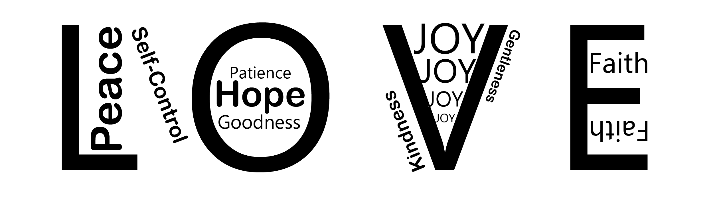
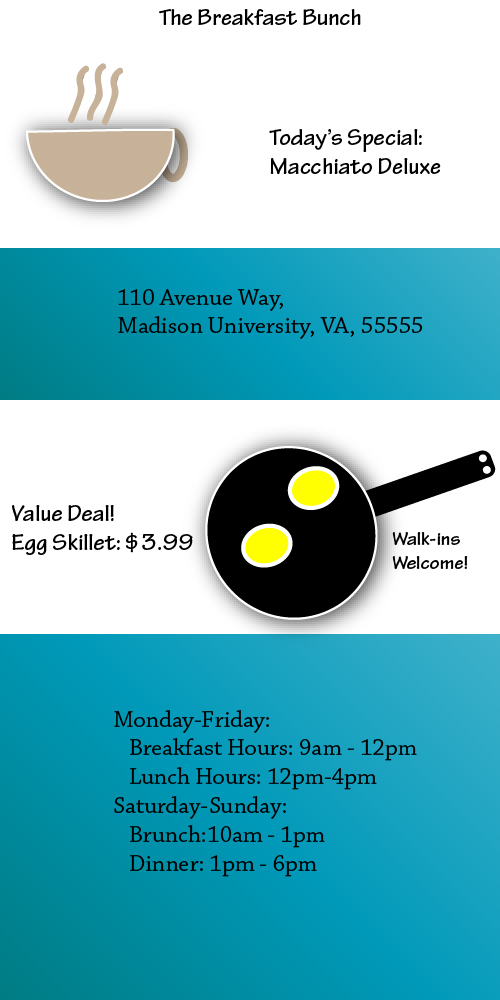

A sampling of the various kinds of projects Nathan has worked on. Samples include continuity editing with iMovie,
typography balancing in Adobe InDesign, Vector creation in Adobe Illustrator, and DSLR photography
A continuity editing excercise from SMAD 202: Audio/Visual Storytelling

The Fruit of the Spirit, in WordArt form.

A poster for a fictional restraunt.Several of the members of the small group "Oozma Kappa" of InterVarsityLeft to Right: Alex Clippinger, Zach Kennedy, Isaac Prock, Tyler Mundy, and Tim WebelBack to Top